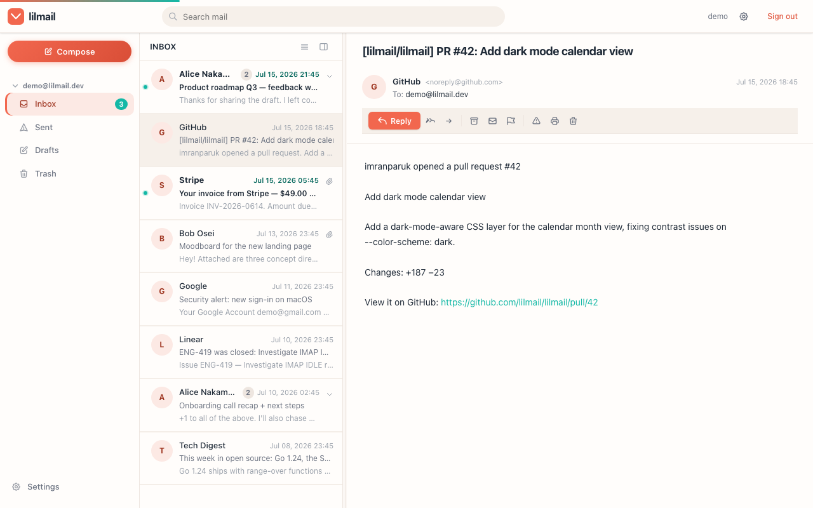

A lightweight, database-free PIM client — mail + calendar + contacts — in a single Go binary.
lilmail is a self-hostable PIM client that connects to your own IMAP/SMTP + CalDAV + CardDAV account and ships as one self-contained Go binary. The UI is server-rendered HTML (Go templates + HTMX + Alpine.js) with every frontend asset embedded — no build step, no CDN, no external services to run by default. Drop the binary next to a config.toml and it runs, comfortably, on 64 MB of RAM.

Everything, in one binary
Core mail is always on. Everything beyond it is opt-in via config keys and adds zero overhead when disabled.
Single binary, no database
Templates and vendored JS embedded with embed.FS; durable state uses an embedded bbolt file by default — nothing to run. An optional Postgres backend is there for shared / multi-instance deploys. Runs fully offline with only config.toml.
Mail that just works
IMAP mailbox browsing and SMTP sending, conversation threading via the JWZ algorithm, plain-text and HTML rich-text compose, file attachments and inline cid: images, scheduled send, and drafts with 30-second auto-save.
Stable /v1 JSON API
A clean REST surface — folders/labels, paginated messages, search, flags, move/archive/spam, snooze, compose + drafts, attachments, calendar, contacts, settings — served alongside the HTMX UI from the same engine and the same session auth.
OAuth2 / OpenID Connect
Authorization-code flow with PKCE (S256), automatic refresh-token handling, and XOAUTH2 / OAUTHBEARER SASL. Sign in with your identity provider — classic username/password login still works alongside it.
Calendar & contacts
CalDAV month/week views with event CRUD, free/busy, and end-to-end iTIP/iMIP meeting invites; CardDAV address-book lookup for recipient autocomplete. Both opt-in via [caldav] / [carddav].
Real-time & AI, opt-in
An IMAP IDLE watcher, SSE stream, browser notifications, and VAPID Web Push; plus an AI assistant for smart compose, thread summaries, and phishing detection via any OpenAI-compatible endpoint. Off by default — enable [notifications] / [ai].
Quick start
Clone, copy the example config, fill in your mail server details, and run. No account to create — lilmail talks to the one you already have.
# Clone git clone https://github.com/vul-os/lilmail.git cd lilmail # Configure — copy the example and fill in # your mail server details + secrets cp config.toml.example config.toml # then edit # Run go run main.go # or: make build && ./lilmail
- 1Build or downloadBuild from source with the Go toolchain, or grab a pre-built archive from Releases — only
config.tomlneeds to sit alongside it. - 2ConfigureA minimal setup needs only an IMAP server plus a
jwt.secretand a 32-characterencryption.key. Optional sections are all default-disabled. - 3Sign inOpen
http://localhost:3000and log in with your email and mail-server password — or click Sign in with OAuth2 if configured.
Self-hosted by design
lilmail is a fully independent project — think Evolution + Evolution-Data-Server for the web. It runs on your box, talks to your accounts, and has no hosted service behind it.
Your own accounts
lilmail connects to the user's own IMAP/SMTP + CalDAV + CardDAV account — Gmail, Outlook, or any standards-compliant server — over OAuth or password. There is no lilmail relay in the middle.
No external services
Frontend assets are embedded via embed.FS; durable state is an embedded bbolt file by default. No CDN, no build step, no database server to provision — it runs air-gapped with only config.toml.
Security-first
JWT sessions, AES-256-GCM encrypted credentials at rest, a strict Content-Security-Policy, SameSite=Lax cookies, a sandboxed email iframe, and CR/LF/NUL header-injection guards on outgoing mail.
Part of Vulos
Vulos is a family of open, self-hostable apps. lilmail is a fully standalone product — it never requires Vulos infrastructure — and exposes a stable /v1 JSON API that Vulos OS (and any rich client) integrates over as a seam, not as a hosted service.